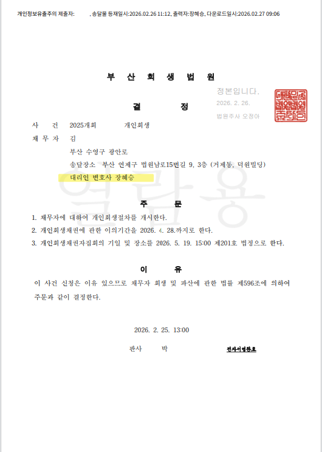
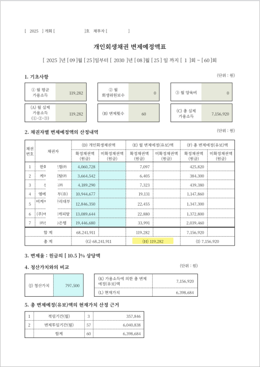

"부산 사람이면 제발!
다른 지역 사무실에 맡겨서
뭉탱이 맞지 마세요!"
안녕하세요. 부산회생법원 정문 바로 앞에서 일하고 있는 이룸법률사무소 대표변호사 장혜승입니다.
제가 왜 번듯한 광고 대신, 사무실 유리창에 이런 투박한 종이를 직접 붙여놓았는지 제 진심을 말씀드리고 싶어 펜을 들었습니다.
지역마다 법원의 성향과 심사 기준은 완전히 다릅니다. 부산회생법원의 성격을 가장 잘 아는 지역구 사무실을 이용하셔야 인가 확률이 높고, 탕감률도 극대화됩니다.
사건 진행 비용이 비슷하다면 마땅히 법원 앞 사무실이 정답인데도, 화려한 인터넷 광고만 믿고 타 지역 사무실에 맡겼다가 소중한 돈과 시간을 잃는 부산 이웃분들을 볼 때마다 너무나 안타까운 마음뿐입니다.
저희가 어떤 곳인지 궁금하신 분들을 위해
실제 인가 사례와 위치를 정리했습니다
아래 두 가지 버튼을 직접 눌러 보시면 실제 탕감 결정문과 정문 앞 약도를 바로 확인하실 수 있습니다.
🔍 부산회생법원 결정문 핵심 부위 확대보기 핵심 2.5배 확대됨 ▲
- • 대리인: 변호사 장혜승 (법원 앞 덕원빌딩 3층 공식 명시)
- • 총채무 (G) 336,512,367원 → 월 변제금 (H) 724,673원
- • 변제율: 원금의 [ 9.7 ]% (= 나머지 90.3% 전액 탕감!)


🔍 부산회생법원 결정문 핵심 부위 확대보기 눌러서 확대 확인 ▼
- • 총채무 (G) 68,241,911원 → 월 변제금 (H) 119,282원
- • 변제율: 원금의 [ 10.5 ]% 상당액 (= 89.5% 전액 탕감!)

📍 부산회생법원 정문 횡단보도 건너 바로 앞 (도보 1분)
거제역(3호선·동해선) 9번·10번 출구 도보 3분, 덕원빌딩 3층입니다. 언제든 편하게 들러 대면으로 상의하실 수 있습니다.

잠깐만요, 혹시
'그거' 알고 계시나요?
개인회생을 진행하시는 동안, 의뢰인께서는 꼭 한 번 이상은 부산회생법원에 직접 출석하셔야 합니다.
하지만 타 지역 사무실에 맡기면 어떻게 될까요? 가장 두렵고 떨리는 그날, 아무런 동행이나 사전 도움 없이 의뢰인 혼자서 낯선 법정에 들어가야 합니다.
만약 제대로 대처하지 못해 불인가(기각)를 받는다고 생각해 보십시오. 그동안 들인 피 같은 비용과 기나긴 시간이 너무나 끔찍하게 날아갑니다. 실제로 법원 바로 앞 저희 사무실에는 하루에도 한 분 이상씩 절망하시고 돌아가는 분들을 봅니다. 그 모습을 볼 때마다 정말 마음이 무너집니다.
실제 법원 개인회생 위원님들조차 답답해하시며 많이 하시는 말씀입니다. 타 지역 사무실들의 불성실하거나 미비한 서류 접수 때문에, 현재 개인회생 인가율은 제도가 생긴 이래 최악의 인가율로 하락하고 있습니다.
부산회생법원 성향을 꿰뚫고 있는 정문 앞 이룸에서 시작해야
불인가 피해 없이 한 번에 안전하게 인가받습니다.
개인회생 4단계 진행 과정,
어디에 맡기느냐에 따라 이렇게 달라집니다
아래 1~4단계를 눌러 실제 진행 과정의 차이를 비교해 보세요
비싼 광고비를 메꾸려 수임료 수백만 원을 먼저 요구하며, 우편으로 서류를 주고받느라 접수부터 몇 주씩 지체됩니다.
당장 목돈이 없으셔도 초기 '서류 발급비'만으로 즉시 사건을 접수하여 의뢰인의 시간과 비용 부담을 덜어드립니다.
혼자 고민하지 마시고,
내 빚이 얼마나 줄어들지 편하게 확인하세요
슬라이더로 채무액을 맞춘 뒤 성함과 연락처만 남겨주시면
부담 없이 예상 감면 결과를 먼저 알려드립니다.
✅ 무료 진단 신청이 안전하게 접수되었습니다!
용기 내어 주셔서 감사합니다. 남겨주신 내용은 100% 비밀이 보장되며, 장혜승 대표변호사 전담팀이 편하신 방식으로 연락드리겠습니다.